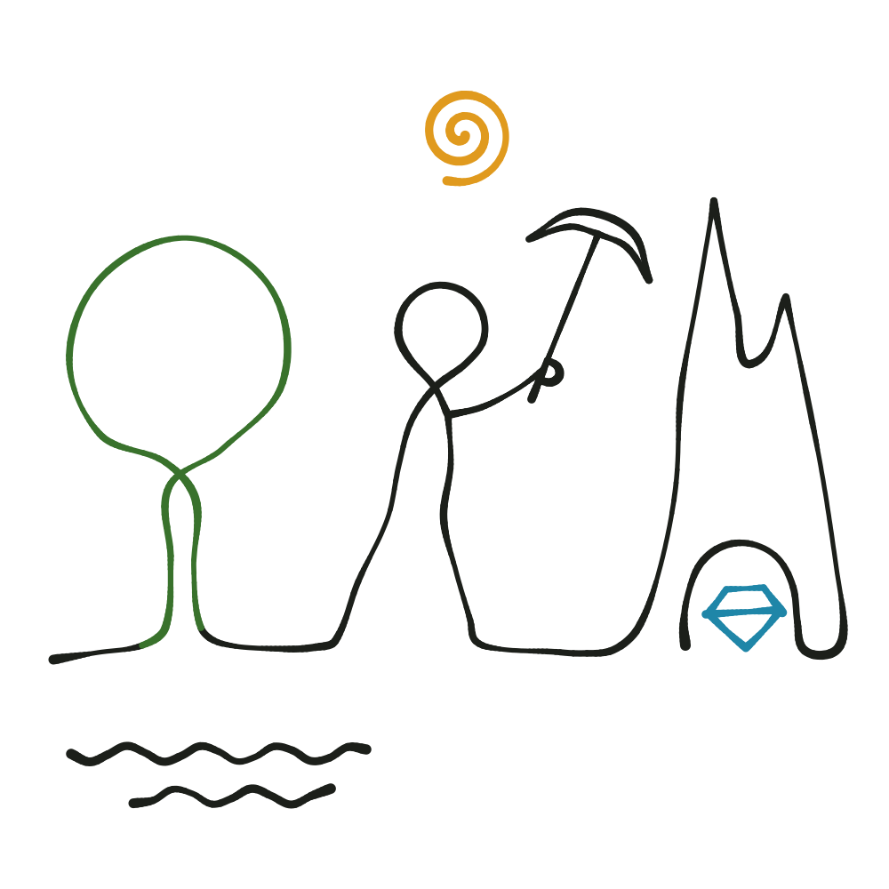
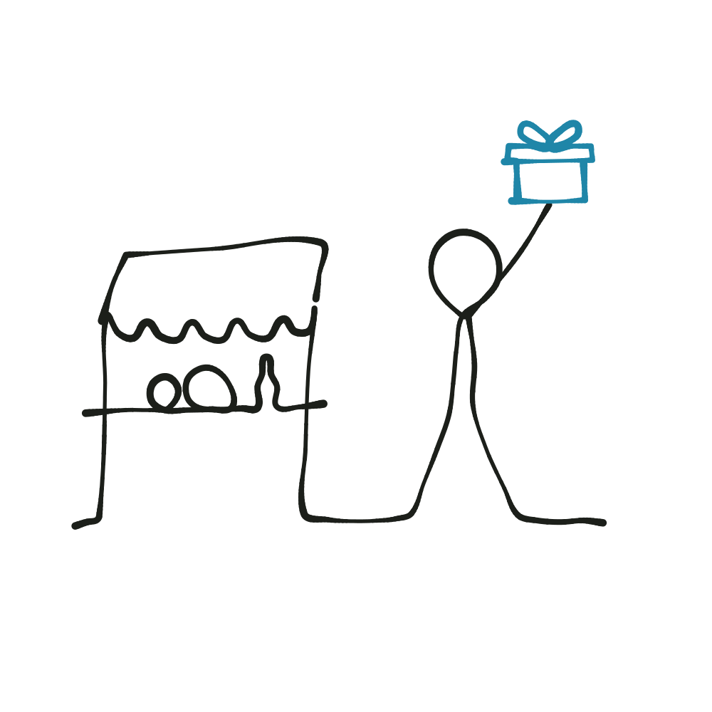

<!doctype html>
<html lang="en">
<meta charset="utf-8">
<meta name="viewport" content="width=device-width, initial-scale=1">
<title>Research demos</title>
<style>
  main {
    display: grid;
    grid-template-columns: repeat(auto-fit, minmax(240px, 1fr));
    gap: 32px 24px;
    width: min(100% - 40px, 960px);
    margin: clamp(40px, 12vh, 120px) auto;
    text-align: center;
    font: 600 18px system-ui, sans-serif;
    user-select: none;
  }
  a { color: #141414; text-decoration: none; -webkit-tap-highlight-color: transparent; }
  /* trim the empty sky and foreground, the same for every drawing so the ground lines still match */
  img { display: block; width: 100%; aspect-ratio: 25 / 21; object-fit: cover; margin-bottom: 12px; -webkit-user-drag: none; }
  @media (max-width: 560px) { main { margin-top: 12px; } }
  @media (hover: hover) {
    a { color: #6b6b67; transition: color 0.3s; }
    img { filter: grayscale(1); opacity: 0.75; transition: 0.3s; }
    a:hover, a:focus { color: #141414; }
    a:hover img, a:focus img { filter: none; opacity: 1; }
  }
</style>
<main>
  <a href="https://aandreychuk.github.io/DEMO/">Decentralized Master-Mind</a>
  <a href="https://tviskaron.github.io/zero-wasm/vision-memory.html">ZeroHero in Crafter</a>
  <a href="https://iameteron.github.io/zerohero-webshop/">ZeroHero in WebShop</a>
</main>
</html>
